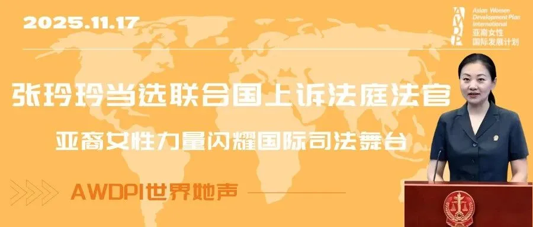
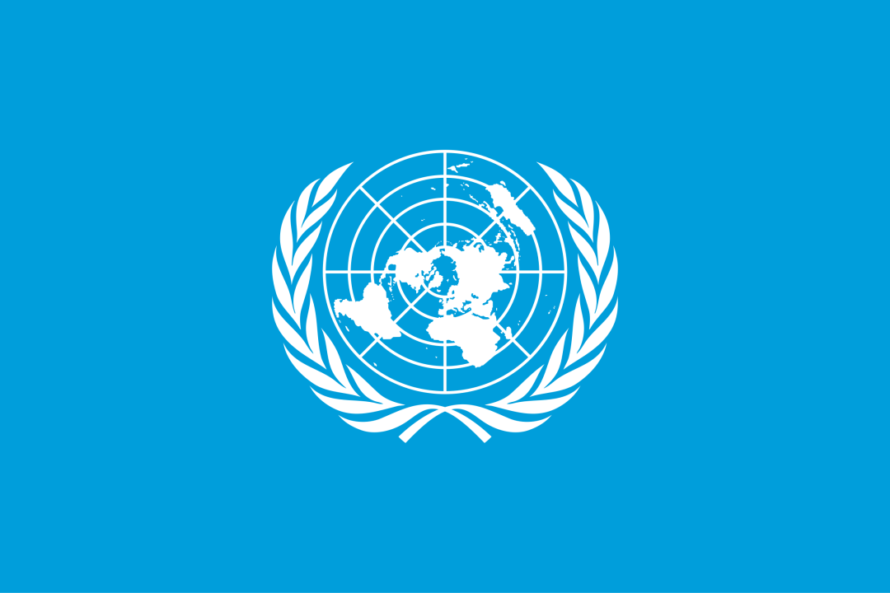
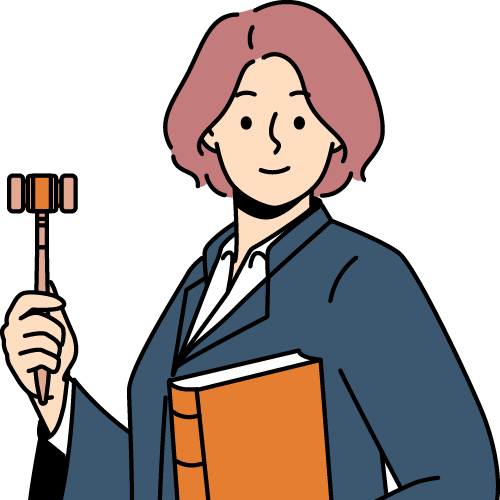

当地时间2025年11月17日，第80届联合国大会选举结果揭晓——中国最高人民法院高级法官张玲玲以最高票当选为联合国上诉法庭法官，自2026年7月1日起履职，为期七年。
这一时刻，不仅是一位杰出亚裔女性，凭借其卓越的专业素养与深厚的实践经验，在司法生涯树立的一座里程碑，更标志着亚太女性法治力量在国际司法舞台上的崛起。张玲玲的当选，为联合国内部司法体系注入新的、不可或缺的女性视角与地区代表性。
高票当选：
国际社会对亚太女性法律力量的信任与期待
在本次联合国上诉法庭的法官选举中，张玲玲法官是八位候选人中唯一一位来自亚太地区的代表。她以显著优势高票胜出，充分体现了国际社会对其专业能力与司法理念的信赖，也反映了对亚太地区特别是女性司法人才更积极的期待。
在全球化理念日益深入人心的今天，联合国司法机构需要多元化的声音，而张玲玲的加入，正是亚太地区法治理念和实践在联合国平台上的有力呈现。
现年 44 岁的张玲玲，拥有深厚的法律理论与审判经验背景。她在中国人民法院系统任职逾十五年，参与审理了数千起各类民商事及行政案件，并参与多部司法解释的起草，发表 60 余篇法学论文与专著。理论与实践兼备，使她成为国际司法舞台上备受关注的卓越法官，也为全球年轻一代亚裔女性法律人树立了重要榜样。
联合国内部司法系统：
维护公平与秩序的核心机制
要理解张玲玲当选的重要意义，首先需要了解她即将履职的舞台。联合国内部司法系统是根据联大第62/228号决议，于2009年进行重大改革后确立的，旨在为联合国及其专门机构的数万名工作人员提供独立、高效的法律救济渠道。该系统由两个核心法庭构成：
联合国争议法庭：作为一审机构，负责审理联合国工作人员提出的涉及聘用、职责、福利等方面的行政纠纷。该法庭的法官在全球不同地点巡回开庭，确保世界各地联合国工作人员的诉求都能得到及时审理。
联合国上诉法庭：作为终审机构，负责受理对争议法庭判决不服而提出的上诉。该法庭由7名法官组成，常驻纽约联合国总部，其判决为终局判决，对各方均具有约束力。上诉法庭通常每年在春、夏、秋三季开庭，庭审地点可设在纽约、内罗毕或日内瓦。

这两个法庭共同构成了维护联合国系统内部正义与法治的基石，确保了这一庞大国际组织能够在规则基础上有效运转，直接关系到联合国工作人员的权益保障与组织的稳定。
亚裔女性力量崛起：
从“参与”到“塑造”的司法实践
张玲玲的当选，并非中国法官在联合国法庭的首秀。2022年，高晓力法官当选联合国上诉法庭法官，后于2023年相继当选为该法庭的第一副庭长及庭长；同期，孙祥壮法官当选联合国争议法庭法官。
而张玲玲作为亚裔女性的成功，更将这一进程推向了新的高度。 长期以来，国际司法机构中的女性代表、特别是来自非西方世界的女性代表比例偏低，而司法判决往往需要对社会结构、个体处境与权利差异拥有敏锐洞察。
张玲玲作为一名在东方文化背景下成长、在处理数千起纷繁复杂的民商事及行政案件中历练出来的女性法官，她的加入，将以其独特视角推动联合国司法在程序正义与实体公正之间取得更包容与更人本的平衡。 她更能体察到制度运行中可能对女性职员造成的隐性不公，更关注程序正义与实体公正的微妙平衡。这种“她力量”的注入，将使联合国上诉法庭的判决更具包容性、更富有人文关怀，更能代表全球人民的普遍正义观。
此外，在国际组织任职，尤其是在司法这样的高端领域，亚裔女性常常面临无形的壁垒。张玲玲以“第一高票”当选，用实力证明了亚裔女性不仅可以跻身于此，更可以成为其中的佼佼者。她的成功为无数怀抱国际法治梦想的亚裔女性照亮了前路，证明了专业主义、不懈奋斗是跨越任何边界的通行证。

张玲玲作为亚太地区的女性代表，她的存在本身就在强化着上诉法庭的合法性与公信力。她确保了这个处理全球雇员纠纷的最高内部司法平台，能够听到并理解来自亚太地区、来自女性群体的声音，从而作出更公正、更普适的裁决，真正践行“公平正义”的联合国核心价值观。
当张玲玲于2026年步入纽约联合国总部那庄严的上诉法庭时，她所携带的，不仅是东方的司法智慧，更是整个亚太地区乃至全球女性对公平正义的执着追求与强大力量。她的履职，将为联合国的内部司法乃至全球治理的民主化进程留下深刻的“女性印记”。她的故事，将激励更多女性走向权力和知识的前沿，也将为全球治理的未来注入更强韧与温柔并存的力量。
撰稿｜王雪琼，伊哲
编辑｜伊哲
排版&封面｜池一诺
图片来源｜秀米素材、维基百科